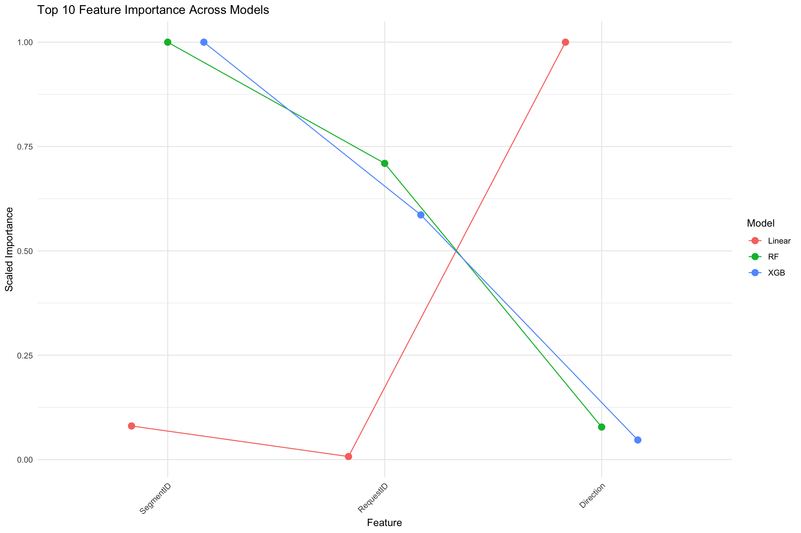

This chapter is on the predictive models to look into the factors driving NYC traffic congestion.
3.1 Setup
Load the necessary libraries and preprocessed data:
3.2 Loading Preprocessed Data
Use the raw traffic CSV for modeling:
Code
# Load raw traffic data for modelingmodel_data <-read_csv(here("data", "Automated_Traffic_Volume_Counts_20250505.csv"))
Rows: 1712605 Columns: 14
── Column specification ────────────────────────────────────────────────────────
Delimiter: ","
chr (6): Boro, WktGeom, street, fromSt, toSt, Direction
dbl (8): RequestID, Yr, M, D, HH, MM, Vol, SegmentID
ℹ Use `spec()` to retrieve the full column specification for this data.
ℹ Specify the column types or set `show_col_types = FALSE` to quiet this message.
Training Linear Regression...
Training Random Forest...
Training XGBoost...
[18:09:07] WARNING: src/learner.cc:767:
Parameters: { "nrounds" } are not used.
# Determine original feature list from Random Forest resultsoriginal_feats <-names(results$RF$feature_importance)feature_importance_df <-tibble(Feature = original_feats)# Linear model: aggregate dummy coefficients by original featurelinear_coefs <- results$Linear$feature_importancefeature_importance_df$Linear <-sapply(original_feats, function(f) { matched <-grep(paste0('^', f), names(linear_coefs), value =TRUE)if (length(matched) ==0) {0 } else {sum(abs(linear_coefs[matched])) }})# Other models: ensure each feature has an importance (zero if missing)for (model_name insetdiff(names(results), 'Linear')) { imp_vec <- results[[model_name]]$feature_importance feature_importance_df[[model_name]] <-sapply(original_feats, function(f) {if (f %in%names(imp_vec)) imp_vec[[f]] else0 })}# Scale importance scores to 0-1 range for comparisonfor (model_name innames(results)) { max_val <-max(feature_importance_df[[model_name]]) feature_importance_df[[model_name]] <- feature_importance_df[[model_name]] / max_val}# Calculate mean importancefeature_importance_df <- feature_importance_df %>%mutate(Mean_Importance =rowMeans(select(., -Feature)),# Add feature ranksMean_Rank =rank(-Mean_Importance) ) %>%arrange(Mean_Rank)# Top featurestop_n_features <-10top_features <- feature_importance_df %>%top_n(top_n_features, Mean_Importance) %>%pull(Feature)# Reshape for plottingimportance_long <- feature_importance_df %>%filter(Feature %in% top_features) %>%pivot_longer(cols =c(-Feature, -Mean_Importance, -Mean_Rank),names_to ="Model",values_to ="Importance" )# Plot top featuresggplot(importance_long, aes(x =reorder(Feature, -Mean_Importance), y = Importance, color = Model)) +geom_point(size =3, position =position_dodge(width =0.5)) +geom_line(aes(group = Model), position =position_dodge(width =0.5)) +labs(title =paste("Top", top_n_features, "Feature Importance Across Models"),x ="Feature",y ="Scaled Importance" ) +theme_minimal() +theme(axis.text.x =element_text(angle =45, hjust =1))

3.7 SHAP Value Analysis
Code
# Create an explainer using the iml packageX_test_matrix <-as.matrix(model_data_split$X_test)predictor <- Predictor$new(model = models$XGB, data = X_test_matrix, y = model_data_split$y_test,type ="regression")# Compute SHAP valuessystem.time({ shapley <- Shapley$new(predictor, x.interest = X_test_matrix[1, ])})# Plot SHAP values for a single instanceplot(shapley)# For a more comprehensive view, we can calculate SHAP values for multiple instances# This is computationally intensive, so we'll sample a small numbersample_indices <-sample(1:nrow(X_test_matrix), 100)sampled_X_test <- X_test_matrix[sample_indices, ]# Feature effects using partial dependencefeature_effects <- FeatureEffects$new(predictor, features = top_features)plot(feature_effects)# Feature importance based on SHAPfeature_importance <- FeatureImp$new(predictor, loss ="mse")plot(feature_importance)
3.8 LIME Analysis
Code
# Create a LIME explainerlime_explainer <-lime(x =as.data.frame(model_data_split$X_train),model =function(x) { pred <-predict(models$XGB, as.matrix(x))data.frame(Prediction = pred) },bin_continuous =TRUE,quantile_bins =FALSE,n_bins =5)# Select a few samples to explainsample_to_explain <- model_data_split$X_test[sample(nrow(model_data_split$X_test), 5), ]# Generate explanationslime_explanations <- lime::explain(x = sample_to_explain,explainer = lime_explainer,n_features =10,feature_select ="highest_weights")# Plot LIME explanationsplot_lime <-plot_explanations(lime_explanations) +labs(title ="LIME Explanations for Sample Predictions")plot_lime